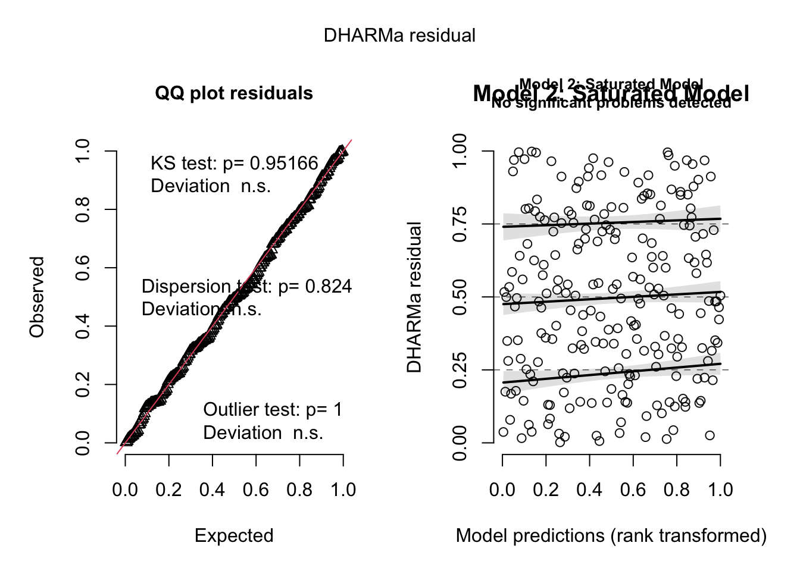
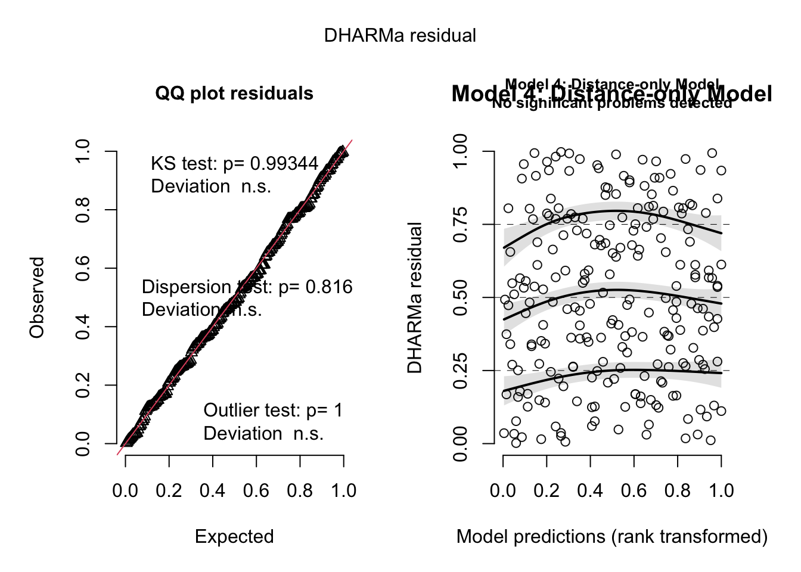
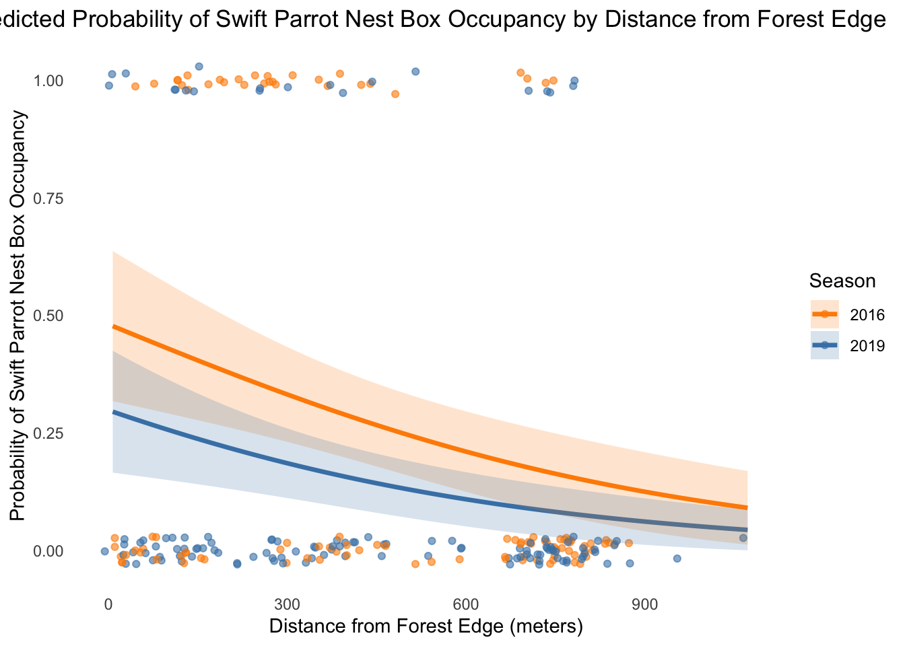

ENVS 193DS Final Project: [Your Project Title Here]
Author
Siaa Singh
Published
June 10, 2025
# Load required librarieslibrary(tidyverse)
── Attaching core tidyverse packages ──────────────────────── tidyverse 2.0.0 ──
✔ dplyr 1.1.4 ✔ readr 2.1.5
✔ forcats 1.0.0 ✔ stringr 1.5.1
✔ ggplot2 3.5.2 ✔ tibble 3.2.1
✔ lubridate 1.9.4 ✔ tidyr 1.3.1
✔ purrr 1.0.4
── Conflicts ────────────────────────────────────────── tidyverse_conflicts() ──
✖ dplyr::filter() masks stats::filter()
✖ dplyr::lag() masks stats::lag()
ℹ Use the conflicted package (<http://conflicted.r-lib.org/>) to force all conflicts to become errors
library(readr)library(ggplot2)library(dplyr)# Read in the SST datasetsst <-read_csv("../data/SST_update2023.csv")
Rows: 291384 Columns: 5
── Column specification ────────────────────────────────────────────────────────
Delimiter: ","
chr (1): site
dbl (3): latitude, longitude, temp
date (1): date
ℹ Use `spec()` to retrieve the full column specification for this data.
ℹ Specify the column types or set `show_col_types = FALSE` to quiet this message.
Problem 1 a. a. Transparent Statistical Methods Part 1: The author used a correlation test, likely Pearson’s correlation, to evaluate the relationship between distance from the headwater and total nitrogen load. This is implied by the phrasing “correlation” and the numeric p-value. The author used an Analysis of Variance (ANOVA) to compare the mean nitrogen loads between different sources (urban land, atmospheric deposition, fertilizer, wastewater treatment, and grasslands), as indicated by the reference to “average nitrogen load” and the overall p-value for group differences.
Including means and standard deviations for nitrogen load by each source category would give readers a clearer picture of how nitrogen contributions differ across land use types.Providing the number of observations per nitrogen source would help readers understand the reliability of the ANOVA results. For example, if one group had a very small sample size, its contribution to the test outcome might be questionable.
Nitrogen load increased with distance from the headwater, suggesting a spatial accumulation effect along the river. A correlation test was used to assess this relationship (test: Pearson’s correlation; r = [correlation coefficient], p = 0.03, α = 0.05). There were statistically significant differences in nitrogen load among the five source categories, suggesting that some sources contribute disproportionately to nitrogen levels in the delta. An ANOVA was used to compare group means (test: ANOVA; F = [test statistic], df = [degrees of freedom], p = 0.02, α = 0.05).
2 a.
# Load required librarieslibrary(tidyverse)library(lubridate)# Read in the SST datasst <-read_csv("../data/SST_update2023.csv")
Rows: 291384 Columns: 5
── Column specification ────────────────────────────────────────────────────────
Delimiter: ","
chr (1): site
dbl (3): latitude, longitude, temp
date (1): date
ℹ Use `spec()` to retrieve the full column specification for this data.
ℹ Specify the column types or set `show_col_types = FALSE` to quiet this message.
# Clean and summarize the SST datasst_clean <- sst %>%# Extract year and month from the date columnmutate(year =year(date),month =month(date, label =TRUE, abbr =TRUE) ) %>%# Group by year and month to calculate monthly meansgroup_by(year, month) %>%summarise(mean_monthly_sst =mean(temp, na.rm =TRUE),.groups ="drop" ) %>%# Filter for years 2018 to 2023filter(year %in%2018:2023)# View a random sample of 5 rowsslice_sample(sst_clean, n =5)
# A tibble: 5 × 3
year month mean_monthly_sst
<dbl> <ord> <dbl>
1 2021 Jun 15.9
2 2022 Oct 17.9
3 2022 May 13.4
4 2020 May 14.6
5 2021 Aug 17.7
# Display the structure of the cleaned datastr(sst_clean)
# Filter data for the years of interestsst_filtered <- sst_clean %>%filter(year %in%2018:2023)# Create the plotggplot(sst_filtered, aes(x = month, y = mean_monthly_sst, group= year, color = year)) +# Add lines for each yeargeom_line(size =1) +# Add points for each monthgeom_point(size =2) +# Use a gradient scale: light to darkscale_color_gradient(low ="lightblue", high ="navy") +# Label the axeslabs(x ="Month",y ="Mean monthly sea surface temperature (°C)",color ="Year" ) +# Put legend inside the plottheme(legend.position =c(0.15, 0.75), # top left-ishlegend.background =element_rect(fill ="white", color ="black"),panel.background =element_blank(),panel.border =element_rect(color ="black", fill =NA) )
Warning: Using `size` aesthetic for lines was deprecated in ggplot2 3.4.0.
ℹ Please use `linewidth` instead.
Warning: A numeric `legend.position` argument in `theme()` was deprecated in ggplot2
3.5.0.
ℹ Please use the `legend.position.inside` argument of `theme()` instead.
Problem 3.
# Load required librarieslibrary(tidyverse) # For data wrangling and ggplotlibrary(DHARMa) # For checking model diagnostics
This is DHARMa 0.4.7. For overview type '?DHARMa'. For recent changes, type news(package = 'DHARMa')
library(MuMIn) # For AIC model comparisonlibrary(broom) # For tidying model output (optional but useful)
Registered S3 methods overwritten by 'broom':
method from
nobs.fitdistr MuMIn
nobs.multinom MuMIn
nest <-read_csv("../data/occdist.csv")
Rows: 227 Columns: 10
── Column specification ────────────────────────────────────────────────────────
Delimiter: ","
chr (4): box, box occupant, eventID, repeated use
dbl (6): edge distance, season, sp, cs, e, tm
ℹ Use `spec()` to retrieve the full column specification for this data.
ℹ Specify the column types or set `show_col_types = FALSE` to quiet this message.
In this dataset, the “sp” variable represents Swift Parrot occupancy. 1 indicates that the parrot used a nest box during the season. The value of 0 indicates that a box was not used/occupied.
The main distinction is that the nest box intervention’s main conservation goal is for Swift Parrots, a species that is critically endangered. Swift Parrot availability may be lowered by non-target or competing species like Common Starlings and Tree Martins, which may also inhabit nest boxes.
Nest box occupancy was measured in 2016 and 2019, which are referred to as the two “seasons” in this study. Researchers can determine whether temporal variation influences nest box use by comparing the environmental conditions and Swift Parrot occupancy levels in these years.
# Model table for Problem 3dlibrary(tibble)model_table <- tibble::tibble(`Model #`=c(1, 2, 3, 4),`Season Included`=c("No", "Yes", "Yes", "No"),`Distance to Edge Included`=c("No", "Yes", "No", "Yes"),`Model Description`=c("Null model — assumes constant occupancy","Saturated model — includes both season and distance","Season-only model","Distance-only model" ))# View the model tablemodel_table
# A tibble: 4 × 4
`Model #` `Season Included` `Distance to Edge Included` `Model Description`
<dbl> <chr> <chr> <chr>
1 1 No No Null model — assumes …
2 2 Yes Yes Saturated model — inc…
3 3 Yes No Season-only model
4 4 No Yes Distance-only model
# Run all logistic regression models for Swift Parrot occupancy# Null model – no predictorsmodel1 <-glm(sp ~1, data = nest, family = binomial)# Saturated model – includes both season and distancemodel2 <-glm(sp ~ season +`edge distance`, data = nest, family = binomial)# Season-only modelmodel3 <-glm(sp ~ season, data = nest, family = binomial)# Distance-only modelmodel4 <-glm(sp ~`edge distance`, data = nest, family = binomial)
3f
# Load DHARMa (only if not already loaded)library(DHARMa)# Simulate residuals for each modelsim1 <-simulateResiduals(model1)sim2 <-simulateResiduals(model2)sim3 <-simulateResiduals(model3)sim4 <-simulateResiduals(model4)# Plot residuals for each modelplot(sim1, main ="Model 1: Null Model")
plot(sim2, main ="Model 2: Saturated Model")

plot(sim3, main ="Model 3: Season-only Model")
plot(sim4, main ="Model 4: Distance-only Model")
Warning in newton(lsp = lsp, X = G$X, y = G$y, Eb = G$Eb, UrS = G$UrS, L = G$L,
: Fitting terminated with step failure - check results carefully

3g.
# Load MuMIn if not alreadylibrary(MuMIn)# Compare models using AICmodel_selection <-AIC(model1, model2, model3, model4)# Print AIC table (this is part of your output)model_selection
The best model as determined by Akaike’s Information Criterion (AIC) was the saturated model (model 2), which included both season and distance from forest edge as predictors of Swift Parrot nest box occupancy. This model had the lowest AIC value (226.21), indicating it provides the best trade-off between goodness of fit and model complexity among those tested.
3f.
# Load required packageslibrary(ggplot2)library(dplyr)# Create a new dataset for predictions across edge distances in both seasonsprediction_data <-expand.grid(`edge distance`=seq(min(nest$`edge distance`), max(nest$`edge distance`), length.out =100),season =unique(nest$season))# Generate predictions with confidence intervals using model2predictions <-predict(model2, newdata = prediction_data, type ="response", se.fit =TRUE)# Bind predictions to the prediction_dataprediction_data$fit <- predictions$fitprediction_data$lower <- predictions$fit -1.96* predictions$se.fitprediction_data$upper <- predictions$fit +1.96* predictions$se.fit# Plot model predictions + underlying dataggplot() +# Add raw occupancy datageom_jitter(data = nest, aes(x =`edge distance`, y = sp, color =as.factor(season)), width =15, height =0.03, alpha =0.6) +# Add prediction linegeom_line(data = prediction_data, aes(x =`edge distance`, y = fit, color =as.factor(season)), size =1.2) +# Add 95% confidence ribbongeom_ribbon(data = prediction_data, aes(x =`edge distance`, ymin = lower, ymax = upper, fill =as.factor(season)), alpha =0.2) +# Customize labels and appearancelabs(x ="Distance from Forest Edge (meters)",y ="Probability of Swift Parrot Nest Box Occupancy",color ="Season",fill ="Season",title ="Predicted Probability of Swift Parrot Nest Box Occupancy by Distance from Forest Edge" ) +theme_minimal() +# Clean themetheme(panel.grid =element_blank(), # Remove gridlinesplot.title =element_text(hjust =0.5) # Center title ) +scale_color_manual(values =c("darkorange", "steelblue")) +scale_fill_manual(values =c("darkorange", "steelblue"))

3i. This figure displays the model-predicted probability of Swift Parrot (Lathamus discolor) nest box occupancy (solid lines) as a function of distance from the forest edge (in meters), for the two study seasons: 2016 and 2019. Observed occupancy values (1 = occupied, 0 = unoccupied) are jittered in the background as points. Shaded ribbons represent 95% confidence intervals around predictions. The model suggests that probability of occupancy declines with increasing distance from the forest edge and differs slightly by season. Data source: Stojanovic et al. (2021), Dryad, https://doi.org/10.5061/dryad.83bk3j9sb
3j.
# Create new data frame for predictionprediction_data <-expand.grid(`edge distance`=c(0, 900),season =c(2016, 2019))# Predict using the best model (model2)# Set type = "response" to get probabilitiespredicted_probs <-predict(model2, newdata = prediction_data, type ="response", se.fit =TRUE)# Combine predictions with original new dataprediction_results <- prediction_data %>%mutate(predicted_prob = predicted_probs$fit,lower_CI = predicted_probs$fit -1.96* predicted_probs$se.fit,upper_CI = predicted_probs$fit +1.96* predicted_probs$se.fit )# Show the final prediction tableprediction_results
3k. Based on our results, Swift Parrot nest box occupancy was highest at the forest edge (0 m) in both seasons. A predicted probability of 0.48 in 2016 and 0.30 in 2019. At 900 m from the edge, predicted occupancy declined sharply to 0.12 in 2016 and 0.06 in 2019. The figure from part h supports this trend, showing a clear decrease in occupancy with increasing distance, and slightly higher occupancy rates across all distances in 2016. This pattern suggests that proximity to forest edge provides ecological advantages—such as better food availability or nesting habitat—which may be critical for Swift Parrots. The stronger edge effect in 2016 may also reflect variation in habitat quality or population size between the two years.
4a. 4a. Comparing Visualizations 1. How are the visualizations different from each other in the way you have represented your data? The affective visualization (HW 3) uses color to represent mood and emphasizes emotional impact, with bold colors and labels to highlight personal experience. In contrast, the exploratory visualization (HW 2) presents the data more neutrally and statistically, using a boxplot to summarize the distribution of hours outdoors across homework load categories.
What similarities do you see between all your visualizations? Both visualizations explore the relationship between daily behavior (time outdoors) and another variable—either emotional state or workload. They also use clear axes and labeling to communicate their message effectively, and both make categorical comparisons (day/mood vs. homework load).
What patterns do you see in each visualization? Are these different between visualizations? If so, why? In the affective plot, I see that days labeled “Happy” are associated with higher average outdoor hours, suggesting a potential link between mood and outdoor activity. In the exploratory plot, “Low” homework days have a higher median outdoor time compared to “High” or “Medium” workload days. Both show a positive relationship between free time and time spent outdoors, reinforcing each other even though they’re framed differently.
4a. What kinds of feedback did you get during week 9 in workshop or from the instructors? I was encouraged to simplify the mood categories and adjust the annotation placement for clarity. I implemented this by reducing the number of moods to three and repositioning the labels so they wouldn’t overlap with the bars. I also added a bolded title and emphasized the emotional framing, per suggestions to make the story more engaging.